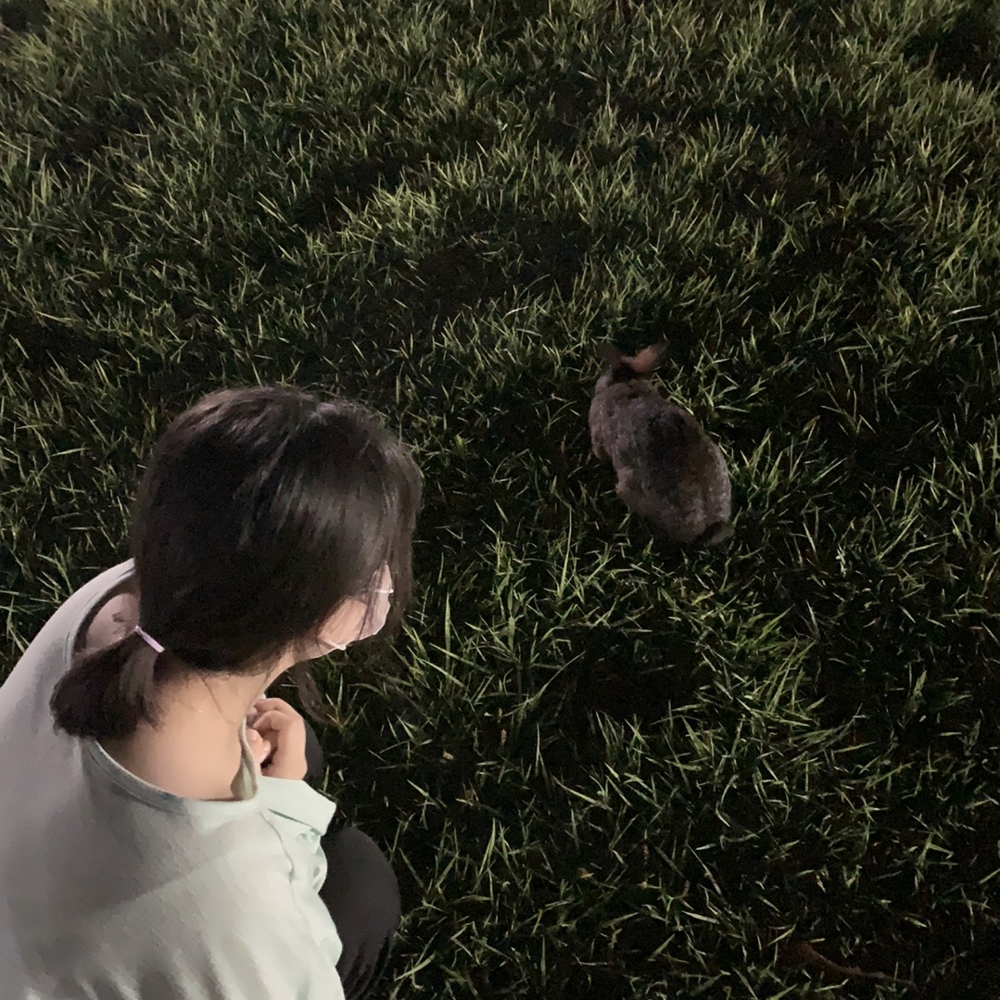
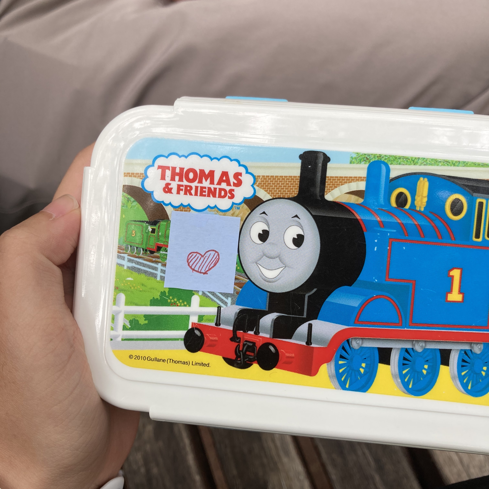
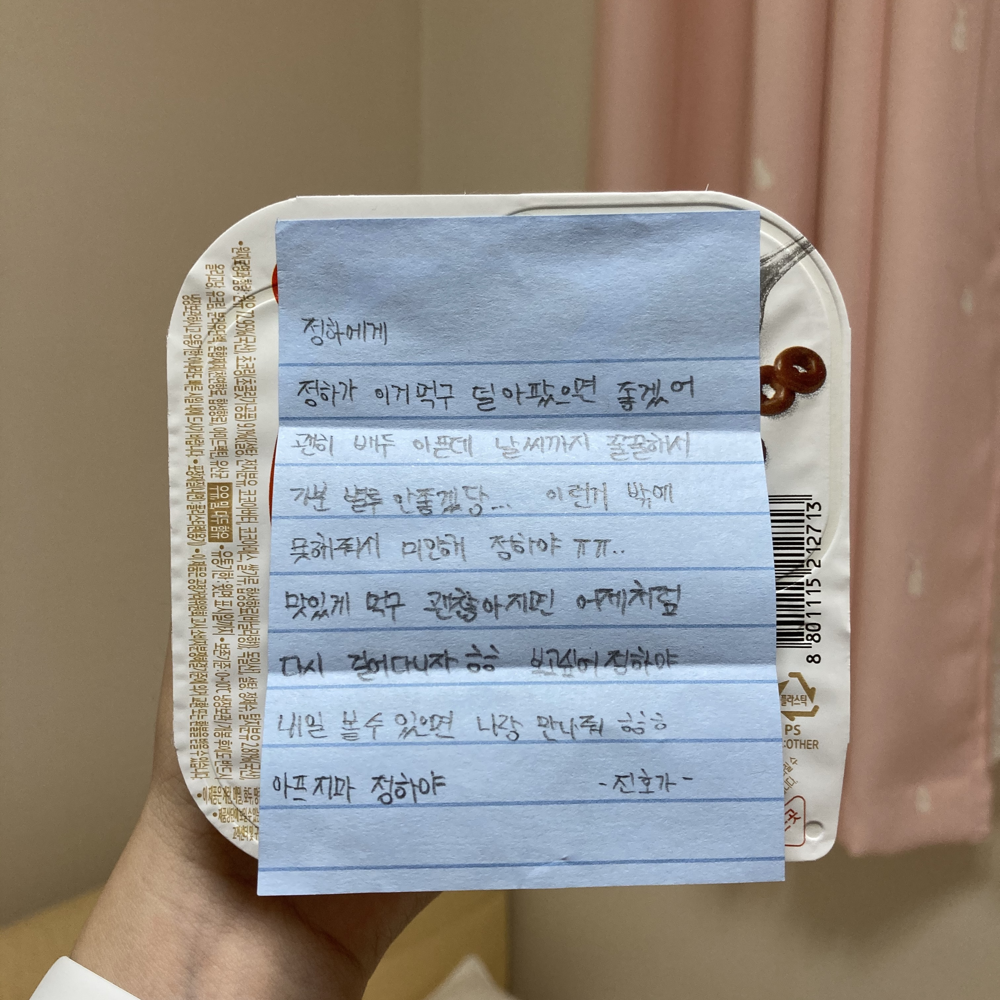

2020.10.17 ~ing
정하가🤍
#01
 중앙공원에 토끼 보러 간 날 !
진호가 나를 처음으로 찍어준 사진이라 그런가 ,, 다른 사진들보다 더 애정이 가는 사진이다 😋
우리 진호,, 걷는 걸 정말 무지하게 싫어하는데도 나 때문에 하루에 4시간 넘게 걸어주고 .. 2020년 여름만 생각하면 진호에게 너무 미안하고 고맙다. 미안한 만큼 내일 더 잘해줘야겠다 ! ❤️
#02
 솔직히 이 날, 남자가 해주는 밥을 처음 먹어보았다. 진호가 직접 만든 스팸김치볶음밥이었는데, 정말 맛있었다. 맛도 맛이었지만 ! 정성스럽게 해온 저 포장(?)이 너무 귀여웠다.
우리 진호는 달걀도 내 마음에 쏙 들게 잘 삶고 계란말이도 아주 예쁘게 잘 만들고 !! 아주그냥 못하는 게 뭔지 모르겠다 🥰(콩깍지 맞다)
#03

진호와 내가 사귀기 하루 전날, 10월 16일에 내가 진호에게 만들어준 귀여운 코알라다 ㅎㅎ 이름은 콜라 ! 코알라를 빠르게 발음하면 콜라라서 콜라다.
아이클레이로 만든거라, 다 만들고 집에 오는 과정에서 손과 귀가 떨어졌었지만 .. 🥲 진호가 본드로 봉합수술 잘 시켜줘서 이제 다 나았다 ✌🏻
진호 책상 위에 있는데, 가서 볼 때마다 귀여워 죽겠다.
#04
 진호와 사귀기 전, 한때 매일매일 비요뜨를 먹었던 적이 있다. 진호가 그걸 알고 항상 비요뜨를 사주곤했다 ㅎㅎ
저 날은 갑자기 생리가 터진 날인데다가 비까지 와서 기분이 매우 꿀꿀한 날이었다 ,, 그치만 진호의 저 귀여운 정성스러운 편지에 행복해졌었다 ! 항상 한달에 한번 행복하게 만들어줘서 고마워 진호야 사랑해